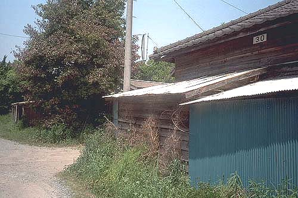
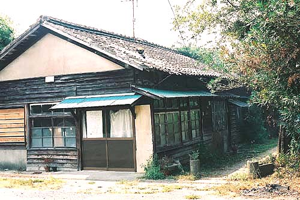
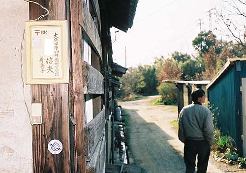
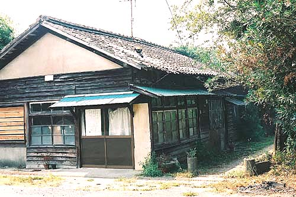
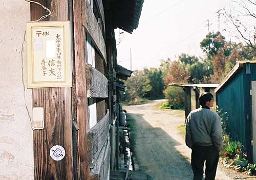
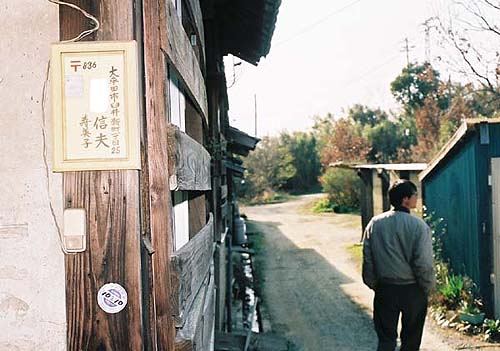

（2000年5月Ｔさん撮影）  臼井社宅30棟（2000年5月Ｔさん撮影）  「引っ越しました」の貼り紙がある厚生理容所（1998年9月13日撮影）  表札が残る空き社宅 BACK NEXT
臼井社宅30棟（2000年5月Ｔさん撮影）  「引っ越しました」の貼り紙がある厚生理容所（1998年9月13日撮影）  表札が残る空き社宅 BACK NEXT
「引っ越しました」の貼り紙がある厚生理容所（1998年9月13日撮影）  表札が残る空き社宅 BACK NEXT
表札が残る空き社宅 BACK NEXT